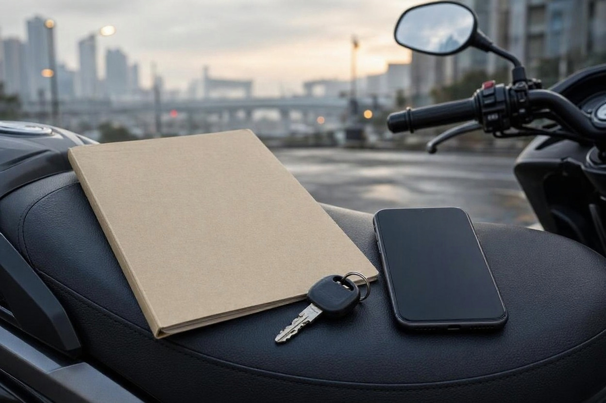
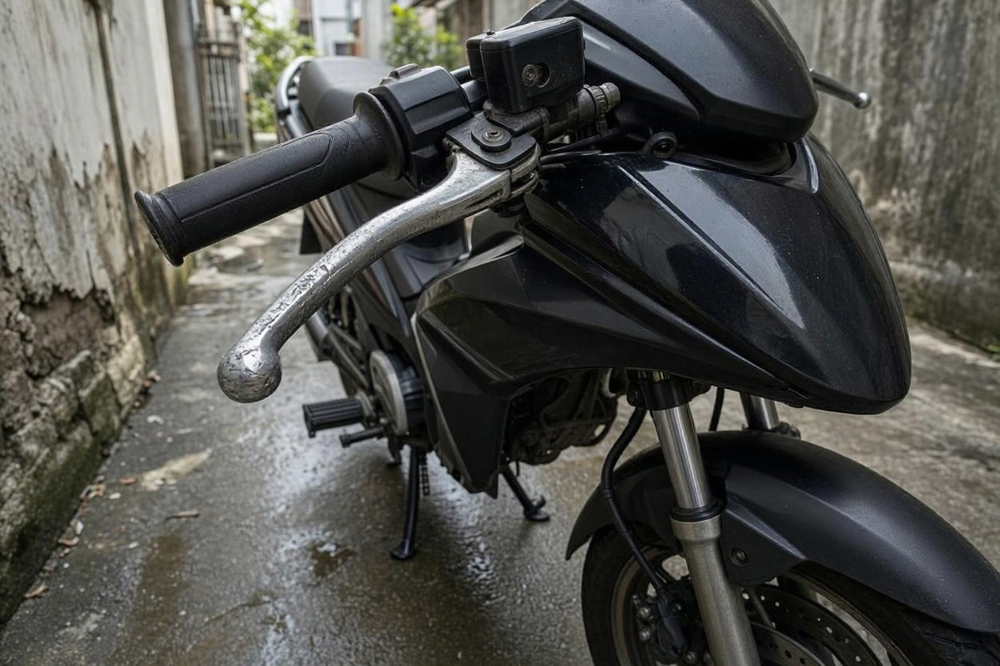
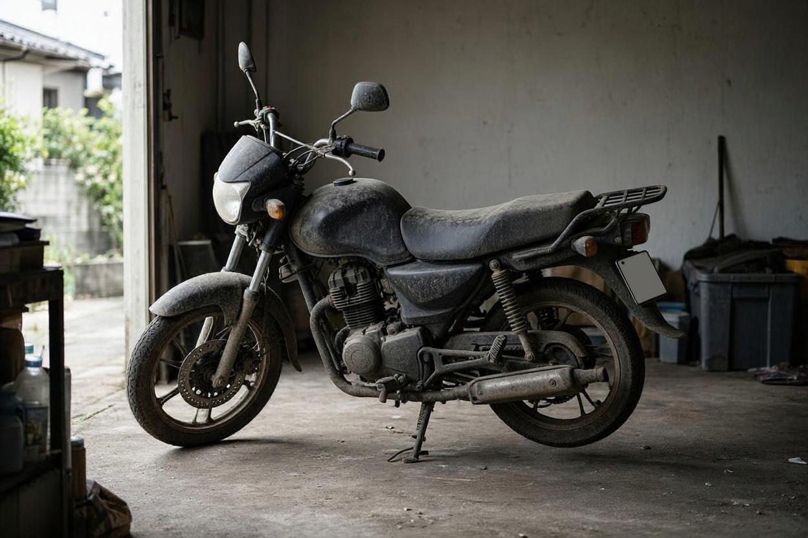

قبل از بازدید موتور کارکرده تلفنی چه بپرسیم؟
فرض کنید آگهی یک موتور ۱۲۵ سیسی طرح شهری را باز کردهاید. قیمت از چند آگهی مشابه پایینتر است و فروشنده میگوید اگر تا عصر نیاید، موتور را به نفر بعدی میدهد. هنوز نمیدانید سند به نام کیست، موتور زمین خورده یا نه، و آخرین بار کی روشن شده است.
قبل از بازدید موتور کارکرده، تماس باید آگهی نامناسب را حذف کند. رفتن به هر آدرس وقت میگیرد و بعضی حرفها را فروشنده فقط وقتی میزند که سؤال دقیق بشنود. در این راهنمای کارماچک برای خریداران موتورسیکلت کارکرده هفت سؤال را طوری میچینیم که جواب، یا وقت بازدید را توجیه کند یا همان پشت تلفن معامله را متوقف کند.
قبل از بازدید موتور کارکرده، تلفنی هفت چیز را روشن کنید: مالک سند، سابقه زمین خوردن یا تصادف، مدت خواب، باز شدن موتور، آخرین سرویس، وضعیت بیمه و خلافی، و محل بازدید بدون بیعانه. جواب مشخص ارزش رفتن دارد. جواب کلی، عجله برای پول، یا ندادن نام روی کارت، دلیل کافی برای کنار گذاشتن آگهی است. تماس جای دیدن موتور نیست.
خلاصه در یک دقیقه
- تماس سلامت موتور را ثابت نمیکند. فقط آگهیهایی را جدا میکند که جوابشان با رفتن نمیخواند.
- نام روی کارت، سابقه ضربه، مدت خواب و باز شدن موتور را جدا بپرسید. جمله سالم است هیچکدام از اینها نیست.
- بیعانه پیش از دیدن موتور، حتی مبلغ کم، دلیل کافی برای توقف همان آگهی است.
- جواب را یادداشت کنید تا سر بازدید با چیزی که میبینید مقایسه شود.
چرا تماس، قبل از بازدید موتور کارکرده لازم است
تماس فروشنده را پای یک روایت مشخص مینشاند. اگر سر بازدید روی دوشاخ خط باشد و تلفنی گفته شده زمین نخورده، اختلاف حرف و موتور خودش یک نشانه است. اگر از اول گفته اهرم و آینه عوض شده، همان قطعه را دقیقتر میبینید.
در آگهیهای ایران این موتور اغلب طرح شهری، اسکوتر جعبهدار یا موتور سبک دیگری است. اسکلت سؤالها یکی است و فرق در جواب است. هدف، غافلگیر کردن فروشنده نیست. پیش از حرکت باید بدانید موتور کجاست، چه کسی جواب میدهد، و کدام موضوع را از نزدیک ببینید.
هفت سوال تلفنی را به همین ترتیب بپرسید
ترتیب مهم است. اگر مکالمه با تخفیف شروع شود، معمولاً همانجا میماند و سابقه ضربه جا میافتد. این هفت مورد را از روی یادداشت بخوانید.
- سند و کارت به نام کیست و فروشنده مالک است یا واسطه.
- زمینخوردگی یا تصادف، کدام سمت و چه قطعهای عوض شده.
- آخرین سواری، مدت خواب و محل نگهداری.
- باز شدن درپوش سوپاپ، سرسیلندر، کلاچ یا پوسته.
- آخرین سرویس، لاستیک، زنجیر یا تسمه، و باتری.
- وضعیت بیمه و خلافی، با استعلام بعدی از مرجع رسمی.
- محل و ساعت بازدید در روز، بدون بیعانه.
سند و کارت به نام کیست
اولین سؤال را از قیمت جدا کنید. موتور مال خود فروشنده است یا واسطه، و نام روی کارت با کسی که گوشی را برداشته یکی است یا نه. نمایشگاه مانع معامله نیست، اما باید معلوم باشد روز بازدید کارت را میبینید.
اگر نام روی کارت را نگفت، بازدید را عقب بیندازید. عکس کارت سند کافی نیست. تطبیق شماره شاسی با کارت کار همان روز است، نه کار تماس.

پیش از حرکت، عکس واضح از دو طرف، از فرمان و از اگزوز بخواهید. اگر فروشنده فقط یک نمای تمیز دارد و بقیه را به «وقتی بیایید» موکول میکند، آگهی هنوز غربال نشده است.
زمین خورده یا تصادف کرده است
بپرسید زمین خورده یا برخورد داشته، کدام سمت، و چه قطعهای عوض شده. «سالم است» را بنویسید، اما تمامشده ندانید. زمینخوردگی سبک اغلب فقط اهرم، آینه یا فلاپ را عوض میکند و فروشنده آن را تصادف نمینامد.
جواب مفید جزئیات دارد: سمت ضربه، قطعه عوضشده، و اینکه شاسی دیده شده یا نه. اگر تلفنی هر اثری انکار شود و سر قرار روی اهرم خراش باشد، روایت عوض شده است.

قبول ضربه بهتنهایی آگهی را حذف نمیکند. اگر هنوز میخواهید همان موتور را ببینید، نشانه ساختاری را از خط فلاپ جدا کنید. راهنمای تشخیص موتورسیکلت تصادفی از روی شاسی، دوشاخ و فرمان همان کار را برای روز بازدید جدا توضیح میدهد.
موتور چقدر خوابیده است
کمکارکرد با خواب یکی نیست. آخرین سواری کی بوده و موتور کجا مانده: پارکینگ، حیاط، یا فضای باز. خاموشی چندماهه باتری، سوخت مانده، لاستیک و کاسهنمد را درگیر میکند، حتی اگر موتور باز نشده باشد.
اگر از چند هفته گذشته، بپرسید کاربراتور تخلیه شده، باتری جدا شده و روغن عوض شده یا نه. ندانستن اینها یعنی هزینه راهاندازی نامعلوم است.

برای تصمیم به رفتن، سه جواب کافی است: مدت، محل، و کار پیش از خاموشی. خرج بیدار کردن دستگاه را در راهنمای خرید موتور خوابیده و هزینه راهاندازی جدا ببینید.
موتور یا پوسته باز شده است
بپرسید بهجز روغن و شمع کدام قطعه باز شده: درپوش سوپاپ، سرسیلندر، کلاچ، یا پوسته. تنظیم سوپاپ روی بسیاری از موتورهای شهری نگهداری است. باز شدن سرسیلندر یا پوسته بهخاطر صدا یا گیرپاژ سابقه دیگری است.
اگر میگوید تعمیر شده، تعمیرگاه و زمان تقریبی را بپرسید. «تازه تعمیر شده پس سالم است» را بهتنهایی نپذیرید. سر بازدید، برق پیچ را با همین جواب تطبیق میدهید.
کیلومتر و آخرین سرویس چه می گوید
کیلومتر را یادداشت کنید و معامله را روی آن نبندید. کیلومترشمار ممکن است عوض شده باشد. آنچه قابل پیگیری است فهرست سرویس است: روغن، لنت، لاستیک، زنجیر یا تسمه، باتری و کمک. وجود فاکتور را بپرسید. خود برگه برای روز بازدید است.
بیمه و خلافی را کی استعلام کنیم
بپرسید شخص ثالث اعتبار دارد یا نه و خلافی مانده یا نه. این جواب شروع است، نه استعلام. اعتبار بیمه و بدهی را از مرجع رسمی چک کنید. اگر گفت خودش تسویه میکند، تا وقتی استعلام با حرف او نخوانده پولی ندهید. شهر پلاک را هم بپرسید و جزئیات حقوقی انتقال را با یک تماس تمام نکنید.
کجا ببینیم و بیعانه کی بدهیم
محل را دقیق بخواهید: محله، پارکینگ یا نمایشگاه، و ساعت روز. آدرس مبهم، یا قرار شبانه در جایی که نمیشناسید، برای غربال آگهی کافی نیست.
بیعانه پیش از دیدن موتور را قبول نکنید. صف خریدار دلیل پرداخت نیست. یا همان روز در ساعت مشخص موتور را میبینید، یا آگهی را رد میکنید.
جواب فروشنده را چطور جدا کنیم
ستون اول بازدید را قابل بررسی میکند و ستون دوم یعنی همان پشت تلفن توقف کنید. ندانستن تاریخ دقیق آخرین روغن، اگر بقیه جوابها روشن باشد، فقط یعنی فاکتور ندارید.
| موضوع | جوابی که بازدید را قابل بررسی می کند | جوابی که بهتر است همان جا توقف کنید |
|---|---|---|
| مالکیت | میگوید کارت روز بازدید هست و به نام کیست | از نام روی کارت طفره میرود |
| ضربه | سمت ضربه و قطعه عوضشده را نام میبرد | هر اثری را انکار میکند و فقط میگوید سالم است |
| خواب | مدت و محل نگهداری را تقریبی میگوید | نمیداند موتور کی خاموش شده |
| تعمیر | روغن را از باز شدن سرسیلندر جدا میکند | همه چیز را تعمیر کامل و بینقص مینامد |
| پول | بازدید در ساعت روز و بدون بیعانه | پیش از دیدن، پول برای نگه داشتن میخواهد |
اگر چند آگهی از این جدول رد شدند و باید بینشان انتخاب کنید، مقایسه را از روی عکس آگهی تمام نکنید. کارشناسی موتورسیکلت پیش از خرید کمک میکند تفاوتها روی خود دستگاه دیده شود.
چه جوابی یعنی بازدید نروید
سه وضعیت را جدی بگیرید. فروشنده نمیگوید موتور مال کیست. برای رزرو قبل از بازدید پول میخواهد. محل را مشخص نمیکند یا اصرار به قرار شبانه در جای ناآشنا دارد.
یک جواب ضعیف همیشه خط پایان نیست. جمع شدن طفره، عجله و بیعانه دیگر به دیدن موتور نیاز ندارد. اگر خواب چندماهه با ادعای سرویس کامل و بدون توضیح آمده، بازدید را حذف نکنید، اما انتظار بررسی طولانیتر داشته باشید.
اگر غربال تمام شد، موتور را از نزدیک بررسی کنید
جواب مشخص فقط اجازه حرکت میدهد. اگر بین دو آگهی مردد ماندهاید، بررسی تخصصی ابهام بازدید را کمتر میکند.
جزئیات کارشناسی موتورسیکلتتماس را با چه ترتیبی جمع کنید
- مرحله اول:آگهی را برای خودتان خلاصه کنید: مدل، سال اگر نوشته شده، شهر و قیمت.
- مرحله دوم:هفت سؤال را به همان ترتیب بپرسید و جواب را همان لحظه بنویسید.
- مرحله سوم:عکس دو طرف، فرمان و اگزوز را بخواهید و با جملههای تلفنی مقایسه کنید.
- مرحله چهارم:ساعت و محل روز را ثابت کنید. بیعانه را از مکالمه حذف کنید.
- مرحله پنجم:اگر جوابها قابل پیگیری بود بازدید را بگذارید. اگر نه، بروید سراغ آگهی بعدی.
اشتباه های رایج پشت تلفن
شروع با چانه قیمت، وضعیت شاسی را عوض نمیکند. قبول «بیا ببین» پیش از سؤال مالکیت و ضربه هم زود است. دیدن لازم است، اما نه برای موتوری که هنوز نمیدانید مال کیست.
جواب را بنویسید، چون سر بازدید ممکن است زمینخوردگی طور دیگری تعریف شود. اسکوتر را هم با موتور دندهای یکی نگیرید. اسکلت سؤالها همان است، اما اسم قطعه باید با همان دستگاه بخواند: تسمه برای اسکوتر، کلاچ و زنجیر برای موتور دندهای.
بعد از تماس، کی به کارشناس نیاز است
تماس خوب فقط اجازه بازدید میدهد. صدا، دود، راستای چرخ، نشتی و خوانا بودن شماره شاسی در مکالمه دیده نمیشوند. اگر جوابها مشخص بود و تصمیم به دیدن گرفتید، بررسی را قبل از هر پرداختی بگذارید.
کارماچک خدمات کارشناسی موتورسیکلت را در ایران ارائه میدهد تا اثر ایراد روی هزینه تعمیر و ارزش معامله روشن شود. این بررسی جای سؤال تلفنی را نمیگیرد و سؤال تلفنی هم جای گزارش بازدید را نمیگیرد.
برای معاملهای که از غربال گذشته، بررسی موتورسیکلت قبل از معامله جای اعتماد به جواب تلفنی را میگیرد.
جمع بندی
قبل از بازدید موتور کارکرده این هفت جواب را داشته باشید: مالک سند، سابقه ضربه، مدت خواب، باز شدن موتور، آخرین سرویس، وضعیت بیمه و خلافی، و محل بازدید بدون بیعانه. جواب مشخص، بازدید را هدفمند میکند. جواب مبهم یا درخواست پول پیش از دیدن، آگهی را همانجا کنار میگذارد. تلفن سلامت موتور را تأیید نمیکند. فقط مشخص میکند کدام موتور ارزش حرکت کردن دارد.
اگر قرار بازدید گذاشتید، بررسی را جلوتر از پول بگذارید
غربال تلفنی وقت شما را برای موتورهایی نگه میدارد که حرفشان قابل پیگیری است. دیدن همان موتور، پیش از پرداخت، هنوز لازم است.
درخواست کارشناسی موتورسیکلتسوالات متداول
اگر فروشنده بگوید وقت تلفن ندارد و بیایید ببینید، چه کار کنیم؟
اگر فروشنده حاضر نیست حتی چند سؤال کوتاه جواب بدهد، بازدید را عقب بیندازید. دیدن موتور بدون دانستن مالک سند و سابقه ضربه، همان رفتوآمدی است که غربال آگهی قرار است حذف کند. بگویید اول نام روی کارت، وضعیت ضربه و محل دقیق را بگوید، بعد ساعت بگذارید. اگر باز هم فقط اصرار به آمدن فوری دارد، آگهیهای دیگری هستند که همین اطلاعات را تلفنی میدهند.
عدد کیلومتر موتورسیکلت را باید باور کرد؟
عدد کیلومتر را بشنوید و یادداشت کنید، اما بهتنهایی معیار خرید نگذارید. کیلومترشمار ممکن است عوض شده باشد یا از اول با کارکرد واقعی نخوانده باشد. مفیدتر این است که عدد را با عمر ظاهری لاستیک، زنجیر یا تسمه، و با حرف فروشنده درباره خواب موتور بسنجید. کیلومتر پایین روی موتوری که ماهها خاموش بوده، به معنی کمخرج بودن نیست. سر بازدید همان عدد را با عکس تلفنی مقایسه کنید.
اگر فروشنده نمایشگاه باشد نه مالک، سوال ها عوض می شود؟
خیر. نمایشگاه و واسطه هم باید بگویند کارت به نام کیست، موتور ضربه خورده یا نه، و چقدر خوابیده است. فرق این است که فروشنده ممکن است خودش سوار نبوده باشد و بعضی جوابها را نداند. ندانستن را از پنهان کردن جدا کنید. اگر بگوید مالک قبلی گفته تصادف نداشته، این نقلقول است نه مشاهده شما. روز بازدید کارت، شاسی و روشن شدن را خودتان ببینید.
بیعانه پیش از بازدید برای نگه داشتن موتور منطقی است؟
برای غربال آگهی، بیعانه پیش از دیدن موتور منطقی نیست. تا وقتی کارت، محل و روشن شدن را ندیدهاید، پول دادن شما را متعهد میکند و فروشنده را به سلامت موتور متعهد نمیکند. اگر چند خریدار همزمان هستند، راهش ساعت مشخص در همان روز است، نه پرداخت تلفنی. بعد از بازدید هم پول را فقط وقتی بدهید که مدارک و شرط معامله روشن شده باشد.
اسکوتر اتوماتیک را با همین هفت سوال غربال کنیم؟
اسکلت سؤالها همان است: مالک، ضربه، خواب، تعمیر، سرویس، بیمه و محل. روی اسکوتر، کنار سؤال تعمیر بپرسید کاور تسمه کی باز شده و لغزش یا بوی سوختگی بوده یا نه. این جواب بازدید را جهت میدهد، اما سلامت واریاتور را تلفنی ثابت نمیکند. اگر جوابها قابل پیگیری بود، بررسی انتقال قدرت و ترمز را برای روز بازدید بگذارید و دستگاه را با موتور دندهای یکی نگیرید.
تماس خوب یعنی دیگر لازم نیست موتور را کارشناسی کنیم؟
تماس خوب فقط میگوید این آگهی ارزش حرکت دارد. صدا، دود، راستای چرخ، نشتی و تطبیق شماره شاسی در مکالمه دیده نمیشوند. اگر جواب فروشنده دقیق بود، بررسی را هنوز قبل از پرداخت انجام دهید. کارشناسی همان کاری است که تلفن عمداً انجام نمیدهد: دیدن خود دستگاه و جدا کردن نشانه از حدس.